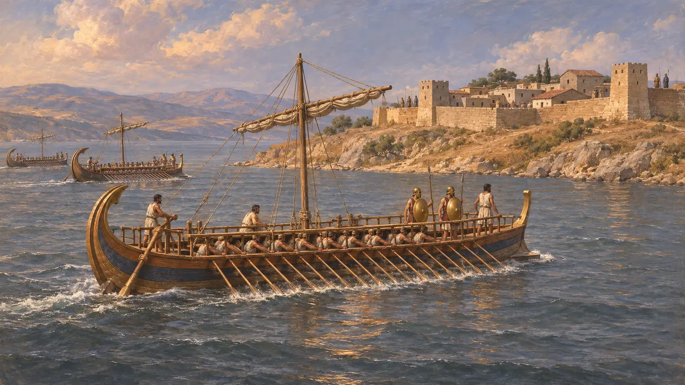
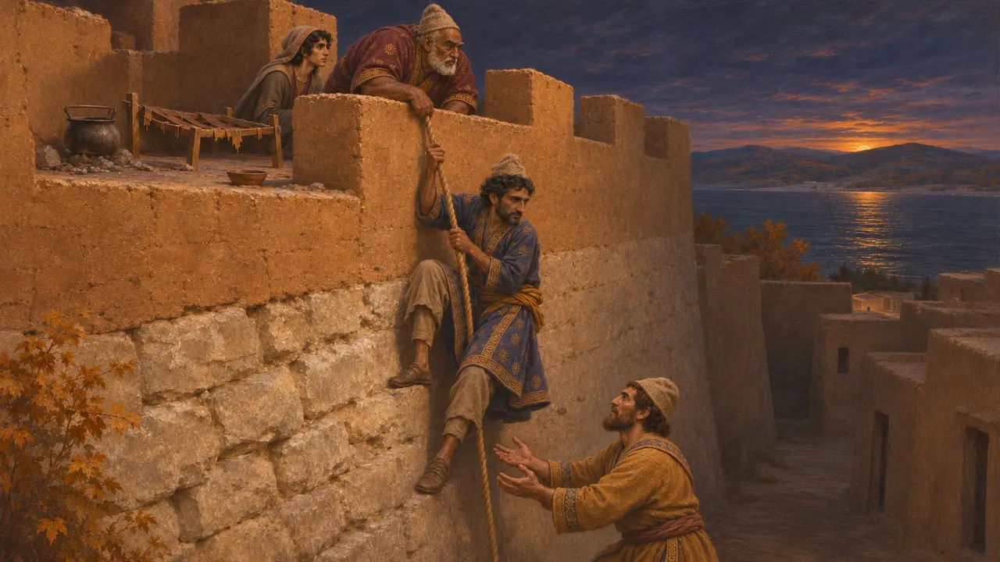
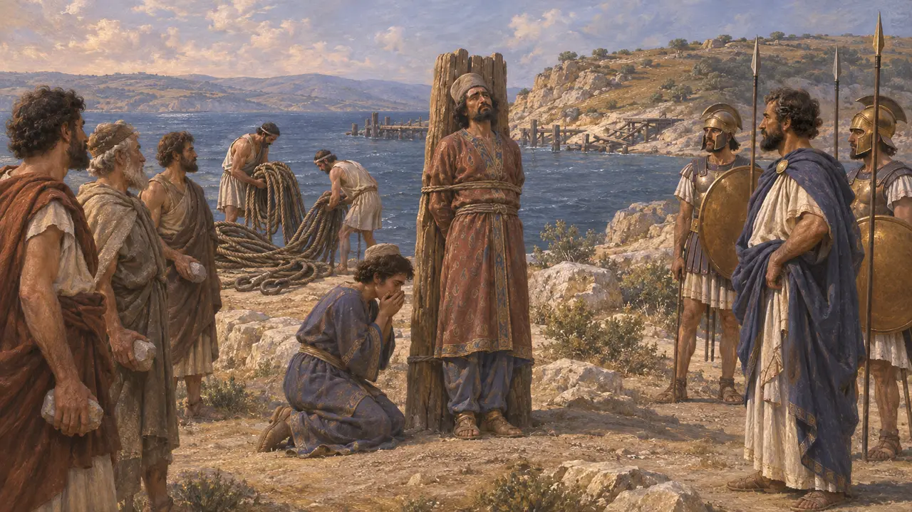
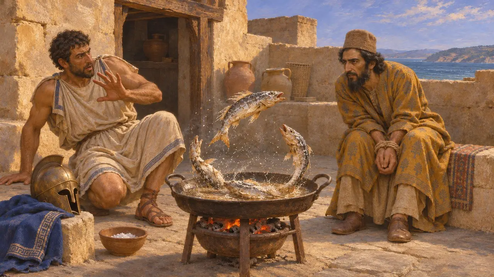
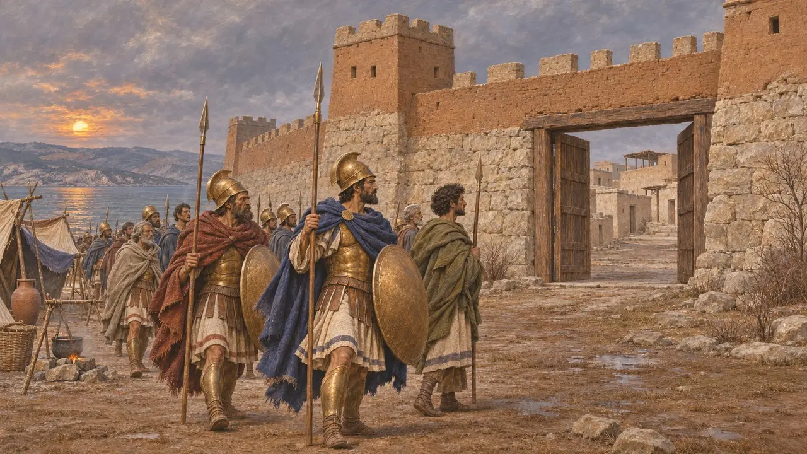

Enciclopedia › Battaglie ed eventi

L'assedio di Sesto
Assedio ateniese della roccaforte persiana sull'Ellesponto, 479-478 a.C.
Nel gioco: Livello 11: Il finale
Dopo la vittoria greca a Micale nel 479 a.C., una forza ateniese assediò Sesto, la città in mano persiana più forte sulla riva europea dell'Ellesponto. La sua caduta per fame spezzò il controllo del Re sul passaggio che Serse aveva usato nel 480 a.C. È l'ultima campagna che Erodoto narra nelle sue Storie.
Nel gioco: Il gioco segue Erodoto: gli Ateniesi di Santippo riducono Sesto alla fame, i Persiani fuggono di notte, Artaicte muore e le gomene tornano in patria. Omette gli alleati ioni e dell'Ellesponto che Tucidide aggiunge.

La flotta all'Ellesponto
Racconto anticoErodoto racconta che la flotta greca salpò da Micale verso Abido per distruggere i ponti di Serse, e li trovò già distrutti. Leotichida e i Peloponnesiaci tornarono a casa. Gli Ateniesi guidati da Santippo rimasero, passarono nel Chersoneso e assediarono Sesto, la piazzaforte più forte della regione. Vi si erano radunati i Persiani delle città vicine, fra cui Eobazo, che aveva portato da Cardia le gomene dei ponti.
Herodotus 9.114-115

La carestia e la fuga notturna
Racconto anticoErodoto dice che l'assedio si trascinò fino all'autunno. I soldati ateniesi chiesero di tornare a casa, ma i loro generali rifiutarono finché la città non fosse caduta o Atene non li avesse richiamati. All'interno, i difensori furono ridotti a bollire e mangiare le cinghie di cuoio dei loro letti, finché una notte i Persiani scesero dalla parte meno sorvegliata delle mura e gli abitanti aprirono le porte. Eobazo fuggì in Tracia, dove i Traci Apsinzi lo sacrificarono al loro dio Plistoro.
Herodotus 9.117-119

Artaucte e il santuario di Protesilao
Racconto anticoErodoto dice che Artaitte, governatore di Serse a Sesto, aveva depredato il santuario dell'eroe Protesilao a Eleunte dopo aver ingannato il Re per farsi concedere la casa di un invasore greco. Catturato presso Egospotami, offrì un riscatto, ma gli abitanti di Eleunte volevano vendetta. Santippo lo fece inchiodare ad alcune assi sul promontorio dove erano approdati i ponti, e fece lapidare suo figlio sotto i suoi occhi. Gli Ateniesi portarono a casa le gomene dei ponti per dedicarle nei templi.
Herodotus 9.116, 9.118-121; 7.33

Il pesce salato
Leggenda posterioreErodoto racconta che, mentre Artaucte era tenuto prigioniero, del pesce salato balzò e si contorse nella padella di una guardia come se fosse appena pescato. Si dice che Artaucte lo prese come un segno che Protesilao, benché morto e secco come quei pesci, aveva ancora il potere di punire il torto subìto. Il racconto trasforma la sua morte nella vendetta di un eroe anziché in un semplice atto di guerra.
Herodotus 9.120

Chi assediò Sesto, e quando
ContesoTucidide aggiunge che gli Ateniesi furono raggiunti da alleati della Ionia e dell'Ellesponto che si erano già ribellati al Re. Dice che svernarono davanti a Sesto e la presero quando i Persiani l'abbandonarono; la caduta potrebbe quindi appartenere all'inverno del 479-478 a.C., mentre Erodoto parla soltanto dell'autunno. Gli storici notano inoltre che Erodoto plasmò la sua conclusione attorno all'empietà persiana punita, e nessuna fonte persiana riporta il punto di vista di Artaicte.
Thucydides 1.89; D. Boedeker, Protesilaos and the End of Herodotus' Histories, 1988
Fonti
- Herodotus 9.114-122
- Thucydides 1.89
- Herodotus 7.33-36
- D. Boedeker, Protesilaos and the End of Herodotus' Histories, 1988
- P. Briant, From Cyrus to Alexander, 2002